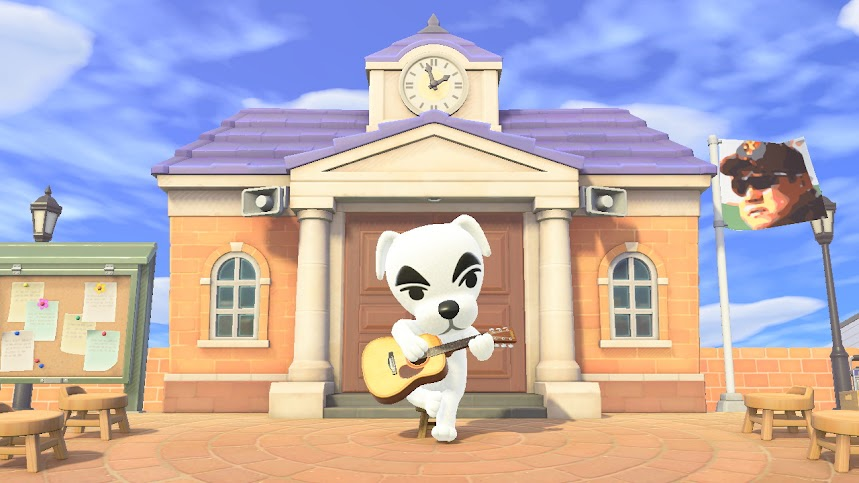
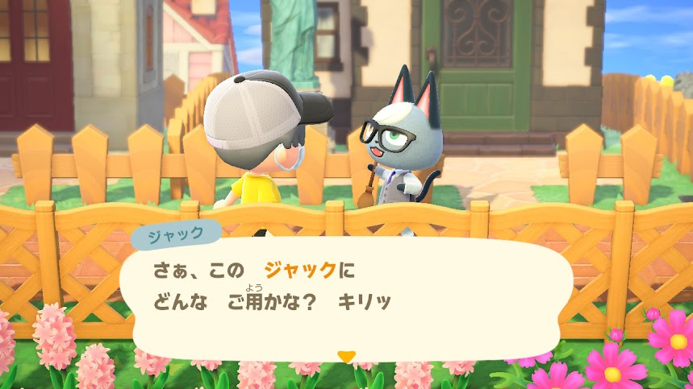
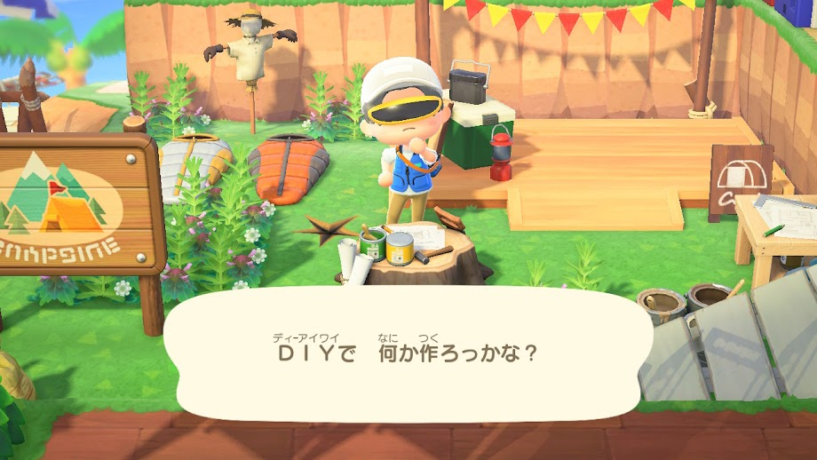
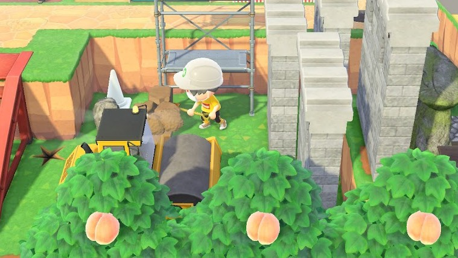
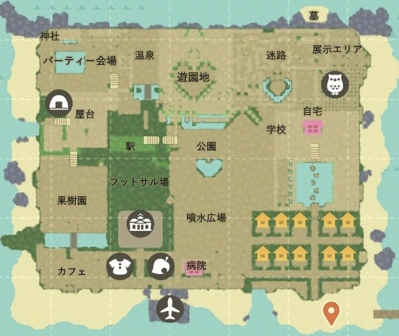
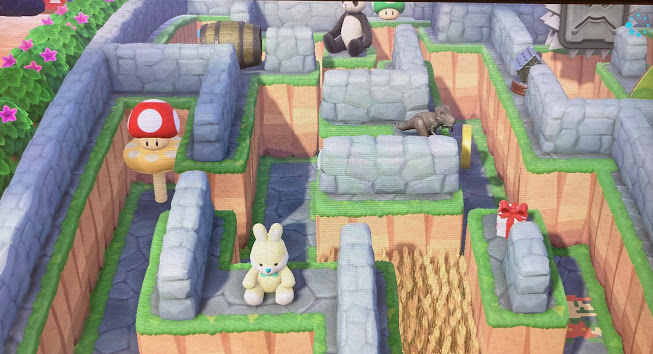

あつ森について
Corona島のご紹介
※ 画像はタップで拡大、スライド可能

ご来島の際はマスク着用しましょう

あつ森について




Corona島は、公園やカフェ、学校や遊園地、温泉など、数多くの施設が建設されています💁🏻
ほかの島のレイアウトのアイデアを参考にして、自分好みに変え、作ってみては取り壊しを重ねて試行錯誤しました🤔
完成したCorona島について、これからご紹介いたします😆
※ 画像はタップで拡大、スライド可能
ご来島の際はマスク着用しましょう
My Home
住民たちの住宅の建物の間に門があり、くぐると両サイドには、なんと滝が！😲
さらに自宅前には露天風呂や食物栽培スペース、高級車ガレージまで備えております。
現実世界でも是非住んでみたいものです🫣

迷路ゲーム

島の中央に位置する公園の右奥に迷路があります。
様々な仕掛けが用意されていて、最終ゴールは小さな噴水広場です。
土管や落とし穴、はしごや座りながらの移動をしなければ進めない箇所もあります🧗🏻♂️
まだまだ紹介できていないこともありますが、
今回は以上とさせていただきます😎
Corona島に興味をもって頂けたら是非とも遊びに来てくださいね👍
フレンド登録や夢番地訪問など、ご自由にどうぞ！